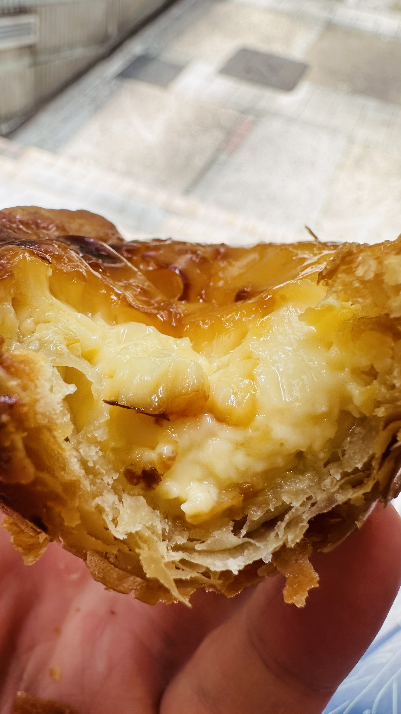
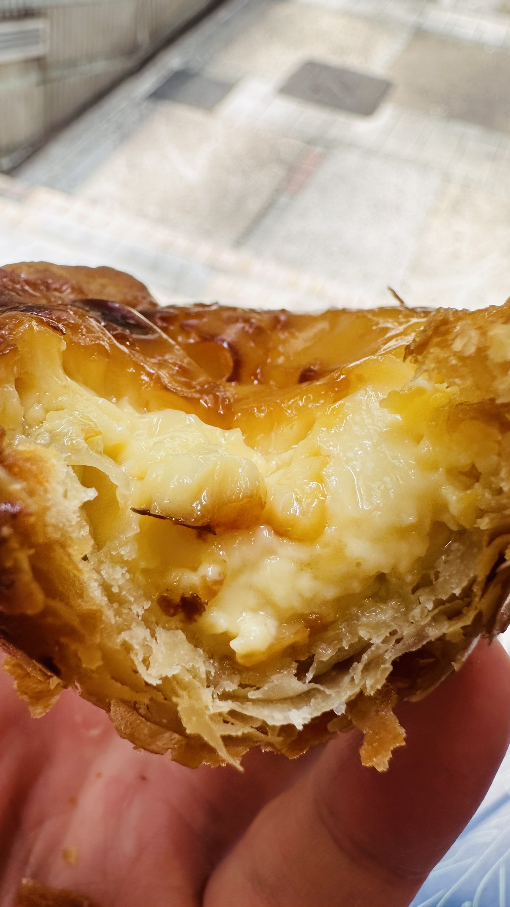

The Parisian Macao
This picture is taken during my trip to Macau, a destination renowned for its casinos. The Parisian Macao is a luxurious destination that captures the essence of Paris in the heart of Macau. Renowned as one of Macau's most iconic landmarks, the tower blends European brick-building architecture with a touch of modern luxury, featuring golden accents. Its half-scale replica of the Eiffel Tower is inspired by Macau's history and its early Portuguese settlement, making it a symbol of elegance and grandeur in the region. The Parisian Macao offers a unique experience where classic European design meets contemporary opulence.

 
